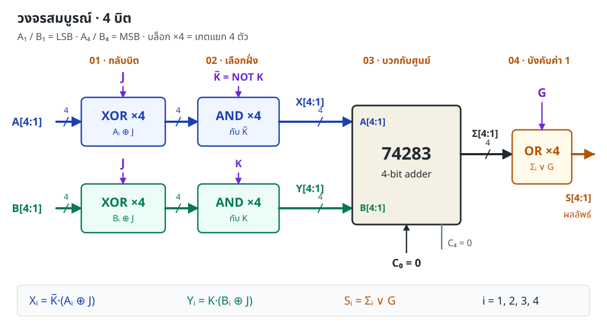
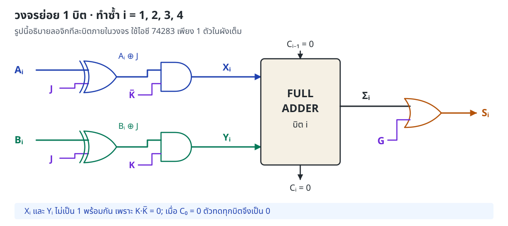
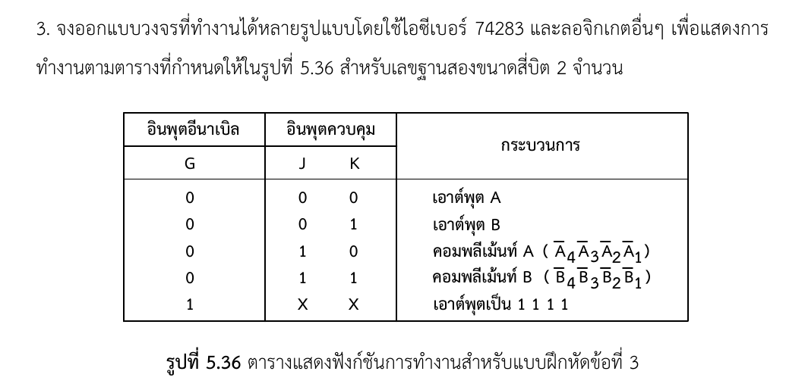

คำตอบสุดท้าย · วงจรหนึ่งแบบที่ตรงตามโจทย์
ใช้ 74283 จำนวน 1 ตัว เป็นวงจรบวก โดยเตรียมอินพุตให้มีข้อมูลอยู่เพียงฝั่งเดียวในแต่ละโหมด แล้วต่อ OR ที่ผลบวกทุกบิตเพื่อบังคับค่า 1 เมื่อ G = 1
Yi = K · (Bi ⊕ J)
C₀ = 0
Σ[4:1] = X[4:1] + Y[4:1] + C₀
Si = Σi ∨ G (i = 1, 2, 3, 4)
X และ Y คือข้อมูลหลังผ่านเกตที่เข้าขา A และ B ของไอซี ส่วน A และ B ของโจทย์คือข้อมูลต้นทาง · + ในสมการ Σ คือการบวกเลขฐานสอง, · คือ AND, ∨ คือ OR, ⊕ คือ XOR

เมื่อ G = 0 จะเห็นผลจาก J, K; เมื่อ G = 1 ผลสุดท้ายเป็น 1111 เสมอ
ขั้นที่ 1 · ระบุการทำงานให้ครบในตารางฟังก์ชัน
เอกสารหัวข้อ 5.7 ให้เริ่มจากตารางฟังก์ชันก่อนเลือกเกต ในข้อนี้ลองอ่านแถว G = 0 ทั้ง 4 แถว แล้วหาว่าแต่ละสัญญาณควบคุมอะไร
K เลือก A หรือ B
แถวที่ K = 0 ใช้ A ทั้งคู่
แถวที่ K = 1 ใช้ B ทั้งคู่
K = 0 → เลือก A
K = 1 → เลือก B
J เลือกค่าจริงหรือค่ากลับ
แถวที่ J = 0 ส่งค่าตามเดิม
แถวที่ J = 1 กลับทุกบิต
J = 0 → ข้อมูลเดิม
J = 1 → คอมพลีเม้นท์
การกลับบิตแล้วบวก 1 จะได้ 0110 ซึ่งเป็น Two's complement และไม่ใช่ผลที่โจทย์ต้องการ
ภาพรวมวิธีคิด 4 ขั้นตามเอกสาร
5 แถวของโจทย์บอกหน้าที่ G, J, K
74283 + XOR + AND + NOT + OR
เลือก X, Y, C₀ ให้ผลบวกเป็นค่าที่ต้องการ
แทนทุกโหมด แล้วตรวจข้อมูลครบ 2,048 ชุด
วิธี 4 ขั้น: หน้าเอกสาร 153 / หน้า PDF 168 · การใช้ XOR เป็น controlled inverter: รูปที่ 5.12 หน้าเอกสาร 140
ขั้นที่ 2 · แปลงผลที่ต้องการเป็นอินพุตของ 74283
74283 บวกข้อมูล 4 บิตสองชุดและตัวทดเข้า: Σ = X + Y + C₀ เราจึงทำให้เอาต์พุตเท่ากับข้อมูลที่ต้องการได้ด้วยการบวกข้อมูลนั้นกับศูนย์
B + 0000 + 0 = B
A + 0000 + 0 = A
B + 0000 + 0 = B
จัดให้ข้อมูล A หรือ A เข้าฝั่ง X และข้อมูล B หรือ B เข้าฝั่ง Y ส่วนฝั่งที่ไม่ได้เลือกต้องเป็น 0000 วิธีนี้กำหนดอินพุตแยกตามฟังก์ชันได้ตรงไปตรงมา เหมือนตารางอินพุตของไอซีในตัวอย่างที่ 5.8–5.9
เลื่อนตารางแนวนอน ↔ เพื่อดูทุกคอลัมน์
| G | JK | X₄X₃X₂X₁ | Y₄Y₃Y₂Y₁ | C₀ | Σ₄Σ₃Σ₂Σ₁ | S₄S₃S₂S₁ |
|---|---|---|---|---|---|---|
| 0 | 00 | A | 0000 | 0 | A | A |
| 0 | 01 | 0000 | B | 0 | B | B |
| 0 | 10 | A | 0000 | 0 | A | A |
| 0 | 11 | 0000 | B | 0 | B | B |
| 1 | ×× | คำนวณตาม JK เช่นเดิม | 0 | ตาม JK | 1111 | |
ในแถว G = 1 เกตอินพุตยังคำนวณตาม J, K แต่ค่า Σ ไม่มีผลต่อเอาต์พุต S เพราะ OR กับ 1 ทุกบิต · ค่า × หมายถึงข้อกำหนดไม่สนใจค่านั้น ไม่ได้หมายถึงปล่อยขาจริงลอย
ขั้นที่ 3 · หาเกตจากสมการอินพุตและเอาต์พุต
ออกแบบสำหรับบิตทั่วไป i ก่อน แล้วทำซ้ำครบ i = 1 ถึง 4 โดยใช้สัญญาณควบคุมร่วมกัน
3.1 หา Xᵢ — ข้อมูลฝั่ง A ต้องถูกเลือกเมื่อ K = 0
จากตาราง: JK = 00 ให้ Xᵢ = Aᵢ, JK = 10 ให้ Xᵢ = Aᵢ, ส่วน K = 1 ให้ Xᵢ = 0 รวมแถวที่มีผลเป็นสมการได้ว่า
= K·(J·Ai ∨ J·Ai)
= K·(Ai ⊕ J)
วงเล็บตรงกลางคือ XOR เพราะให้ 1 เมื่อ Aᵢ และ J ต่างกัน ดังนั้นใช้ XOR เพื่อเลือกค่าจริง/ค่ากลับ แล้วใช้ AND กับ K เพื่อเปิดเฉพาะฝั่ง A
3.2 หา Yᵢ — ข้อมูลฝั่ง B ต้องถูกเลือกเมื่อ K = 1
= K·(J·Bi ∨ J·Bi)
= K·(Bi ⊕ J)
คุณสมบัติ XOR ที่ใช้
D ⊕ 0 = D
D ⊕ 1 = D
J = 1 กลับบิตทั้งสองชุดก่อนเลือก ฝั่งที่ไม่ได้เลือกจะถูก AND ให้เป็นศูนย์
เลือกเพียงฝั่งเดียวด้วย K
K = 0 → X เปิด, Y = 0
K = 1 → X = 0, Y เปิด
NOT 1 ตัวสร้าง K กลับค่า แล้วแบ่งไปเข้า AND ทั้ง 4 บิตฝั่ง A
3.3 หา Sᵢ — เมื่อ G = 1 ต้องบังคับเป็น 1
ต้องการ G = 0 → Sᵢ = Σᵢ และ G = 1 → Sᵢ = 1 นี่คือตารางการทำงานของ OR โดยตรง
Σi ∨ 0 = Σi
Σi ∨ 1 = 1

ขั้นที่ 4 · ประกอบวงจรและพิสูจน์ว่าตรงทุกแถว
4.1 ต่อขาให้ตรงกับผัง
- นำ Aᵢ และ J เข้า XOR ได้ Aᵢ ⊕ J แล้วเข้า AND กับ K ได้ Xᵢ ทำซ้ำ 4 บิต
- นำ Bᵢ และ J เข้า XOR ได้ Bᵢ ⊕ J แล้วเข้า AND กับ K ได้ Yᵢ ทำซ้ำ 4 บิต
- ต่อ Xᵢ เข้าขา Aᵢ ของ 74283 และ Yᵢ เข้าขา Bᵢ ของ 74283 โดยดัชนีบิตต้องตรงกัน
- ต่อ C₀ เป็น 0 แล้วนำ Σᵢ แต่ละบิตไป OR กับ G ได้ Sᵢ ทั้ง 4 บิต
กำหนด A₁, B₁, S₁ เป็น LSB น้ำหนัก 1 และ A₄, B₄, S₄ เป็น MSB น้ำหนัก 8 จึงอ่านเลขเรียงจากบิต 4 → 1 เช่น A₄A₃A₂A₁ = 1010
4.2 ทำไมผลบวกไม่เกิดตัวทด?
เพราะ K และ K ไม่เป็น 1 พร้อมกัน จึงไม่มีบิตใดที่ Xᵢ และ Yᵢ เป็น 1 พร้อมกัน
Ci = Xi·Yi ∨ Ci−1·(Xi ⊕ Yi)
C₀ = 0 → C₁ = 0 → C₂ = 0 → C₃ = 0 → C₄ = 0
สูตรตัวทดจาก Full Adder ใช้พิสูจน์ค่าลอจิกทีละบิต เมื่อข้อมูลอีกฝั่งเป็นศูนย์และตัวทดเข้าเป็นศูนย์ ผลบวกจึงเท่ากับข้อมูลฝั่งที่เลือก และไม่ล้น 4 บิต
การไล่ C₁–C₄ นี้เป็นการตรวจเชิงลอจิก ส่วน 74283 จริงใช้วงจรเร่งการคำนวณตัวทด ไม่ได้จำลองเวลาหน่วงของฮาร์ดแวร์ในหน้านี้
4.3 แทนสัญญาณควบคุมทีละโหมด
เลื่อนตารางแนวนอน ↔ เพื่อดูทุกคอลัมน์
| GJK | อินพุตของไอซี | เอาต์พุตหลัง OR | ตรงโจทย์ |
|---|---|---|---|
| 000 | X = A, Y = 0000, C₀ = 0 | S = A ∨ 0000 = A | ✓ |
| 001 | X = 0000, Y = B, C₀ = 0 | S = B ∨ 0000 = B | ✓ |
| 010 | X = A, Y = 0000, C₀ = 0 | S = A ∨ 0000 = A | ✓ |
| 011 | X = 0000, Y = B, C₀ = 0 | S = B ∨ 0000 = B | ✓ |
| 1×× | X, Y ตาม JK; C₀ = 0 | S = Σ ∨ 1111 = 1111 | ✓ |
G = 1 ทำให้ Sᵢ = 1 เสมอ; G = 0 เหลือฟังก์ชันเลือกข้อมูลและกลับบิตตรงตาม 4 แถวแรก
ดูจำนวนไอซีและตารางต่อขา 74283 สำหรับนำไปต่อวงจร
ตัวอย่างจัดชุดเกตในตระกูล 74LS จำนวน 7 แพ็กเกจ สำหรับวงจรที่แสดงนี้:
| ไอซี | จำนวน | หน้าที่ |
|---|---|---|
| 74LS283 | 1 | วงจรบวก 4 บิต |
| 74LS86 | 2 | XOR 8 เกต: A และ B กับ J |
| 74LS08 | 2 | AND 8 เกต: เลือก X หรือ Y |
| 74LS04 | 1 | ใช้ NOT 1 เกตสร้าง K กลับค่า |
| 74LS32 | 1 | OR 4 เกต: Σ กับ G |
| บิต i | Xᵢ → ขา Aᵢ | Yᵢ → ขา Bᵢ | Σᵢ → OR กับ G |
|---|---|---|---|
| 1 · LSB | 5 | 6 | 4 |
| 2 | 3 | 2 | 1 |
| 3 | 14 | 15 | 13 |
| 4 · MSB | 12 | 11 | 10 |
ขา 7 = C₀ ต่อ GND · ขา 8 = GND · ขา 16 = VCC · ขา 9 = C₄ เป็นเอาต์พุตตัวทด ซึ่งไม่ใช้เป็นบิตของคำตอบ S และปล่อยเอาต์พุตนี้ไม่ต่อได้
ตรวจหมายเลขขาจาก Texas Instruments · SN74LS283 datasheet หน้า 1 ตารางนี้ใช้กับแพ็กเกจ 16 ขาของ 283; ต้องตรวจผังขาของชิปที่ใช้งานจริง และต่ออินพุตที่ไม่ได้ใช้ของเกตเสริมให้มีระดับลอจิกแน่นอน
ทดลองวงจร · เห็นข้อมูลไหลไปทีละขั้น
เริ่มด้วย A = 1010, B = 0011 แล้วลองทั้ง 5 ฟังก์ชัน กดบิตเพื่อเปลี่ยนค่า หรือใส่เลขฐานสิบ 0–15 ใช้ปุ่ม “ขั้นถัดไป” ดูค่าหลังเกตแต่ละชุด
B ⊕ J = 1100
Y = 0000
C₀ = 0, C₄ = 0
S = 0101
J = 1 จึงกลับทุกบิต: A 1010 → 0101 และ B 0011 → 1100
ดูการบวกทีละบิตและตัวทดทั้งหมด
| บิต i | Xᵢ | Yᵢ | Cᵢ₋₁ | Σᵢ | Cᵢ | G | Sᵢ |
|---|
เลื่อนตารางแนวนอนเพื่อดูทุกคอลัมน์ · ตารางนี้แสดงค่าลอจิกคงตัว ไม่แสดง propagation delay ของวงจรจริง
ตารางผลลัพธ์ตามข้อมูลที่กำลังทดลอง
แถวที่ไฮไลต์คือโหมดปัจจุบัน ตารางนี้เปลี่ยนตาม A และ B ในห้องทดลอง
| GJK | ฟังก์ชัน | S ฐานสอง | S ฐานสิบ |
|---|---|---|---|
| 000 | A | 1010 | 10 |
| 001 | B | 0011 | 3 |
| 010 | กลับบิต A | 0101 | 5 |
| 011 | กลับบิต B | 1100 | 12 |
| 1×× | 1111 | 1111 | 15 |
เขียนคำตอบส่งอย่างไรให้ครบและตรวจง่าย
กำหนด Xᵢ และ Yᵢ เป็นอินพุตของวงจรบวก 74283 โดย
Xᵢ = K·(Aᵢ ⊕ J), Yᵢ = K·(Bᵢ ⊕ J), C₀ = 0
เมื่อ K = 0 วงจรเลือกข้อมูล A และเมื่อ K = 1 เลือกข้อมูล B ส่วน J = 0 ส่งค่าจริงและ J = 1 กลับทุกบิต จากนั้นนำผลบวก Σᵢ มา OR กับ G ได้
Sᵢ = Σᵢ ∨ G, i = 1, 2, 3, 4
เมื่อ G = 0 เอาต์พุตเป็น A, B, A, B ตามค่า JK = 00, 01, 10, 11 ตามลำดับ และเมื่อ G = 1 เอาต์พุตเป็น 1111 ทุกโหมด ตัวทด C₄ = 0 เพราะอินพุตทั้งสองฝั่งไม่ถูกเลือกพร้อมกัน
แนบตารางที่ 1 และผังวงจรรูปที่ 1 เพื่อให้เห็นการกำหนดอินพุตและการต่อเกตครบทั้ง 4 บิต
กลับบิต ≠ กลับบิตแล้วบวก 1
ต้องตั้ง C₀ = 0 ทั้งสี่โหมด มิฉะนั้นค่าจริงก็จะเพิ่ม 1 และโหมดกลับบิตจะกลายเป็น Two's complement
บังคับ 1111 ใช้ OR กับ G
AND กับ G จะให้ศูนย์เมื่อ G = 0 จึงไม่ผ่านข้อมูลตามโจทย์ ต้องใช้ Σᵢ ∨ G ทุกบิต
แยกข้อมูลต้นทางกับขาไอซี
A ของโจทย์ไม่ใช่ X ที่เข้าฝั่ง A ของไอซีเสมอไป ข้อมูลต้องผ่าน XOR และ AND ก่อนเข้า 74283
ตัวทดไม่ใช่บิตที่ห้าของคำตอบ
โจทย์ต้องการ S₄S₃S₂S₁ จำนวน 4 บิต ค่า C₄ ไม่ได้เข้าชุดเอาต์พุต S และเป็น 0 ในวงจรนี้
A = 1010, B = 0011 และ GJK = 010 เอาต์พุต S ควรเป็นอะไร?
เลือกคำตอบแล้วดูเหตุผลประกอบ
อ้างอิงต้นฉบับ · ตรวจตำแหน่งในเอกสารได้
ข้อกำหนดและวิธีออกแบบยึดตาม 305241_lecture.pdf ส่วนสมการ X, Y และผังวงจรในหน้านี้เป็นการประยุกต์วิธีในเอกสารเพื่อเฉลยข้อ 3
เลื่อนตารางแนวนอน ↔ เพื่อดูทุกคอลัมน์
| สิ่งที่ใช้ | หน้าเอกสาร | หน้า PDF |
|---|---|---|
| โจทย์ข้อ 3 และตารางรูปที่ 5.36 | 160 | 175 |
| หัวข้อ 5.7: วิธีออกแบบ 4 ขั้น และตัวอย่างที่ 5.8 | 153 | 168 |
| ตัวอย่างที่ 5.9: ตารางกำหนดอินพุตของ 74283 | 154–155 | 169–170 |
| 74283: สัญลักษณ์และวงจรบวก รูปที่ 5.6–5.7 | 137 | 152 |
| XOR ควบคุมค่าจริง/คอมพลีเม้นท์ รูปที่ 5.12 | 140 | 155 |
| สูตร Sum และ Carry ของ Full Adder | 135 | 150 |
ดูโจทย์ต้นฉบับรูปที่ 5.36

หมายเลขขาไอซีเพิ่มเติม: Texas Instruments · SN74LS283 datasheet หน้า 1
การตรวจเชิงตรรกะ: ทดสอบ A, B ตั้งแต่ 0–15 และ G, J, K ทุกค่า รวม 16 × 16 × 2³ = 2,048 กรณี ด้วย สคริปต์ตรวจวงจร ซึ่งเปรียบเทียบผลจากเกตกับข้อกำหนดของโจทย์